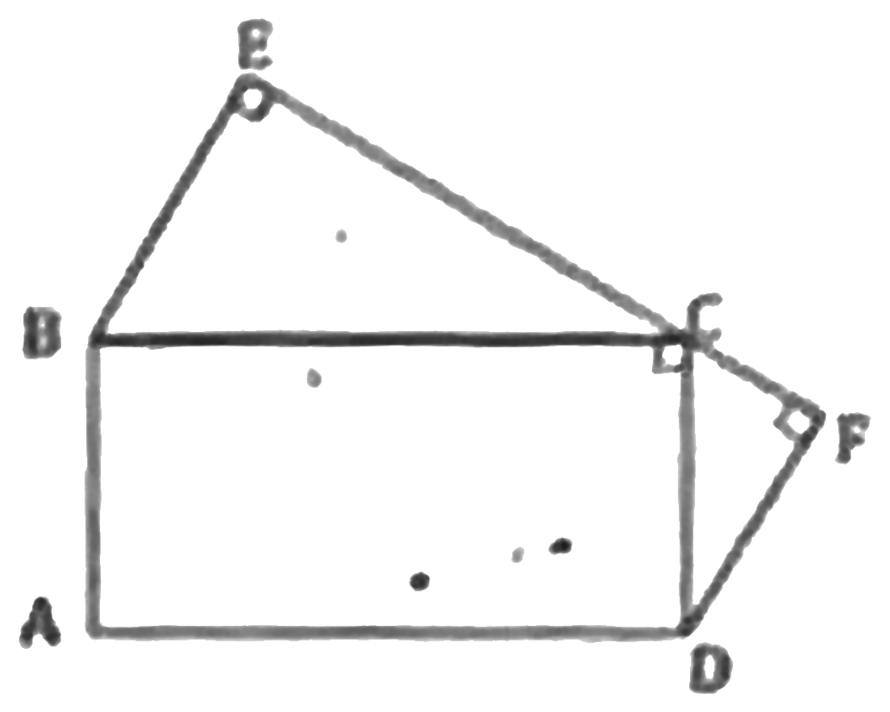
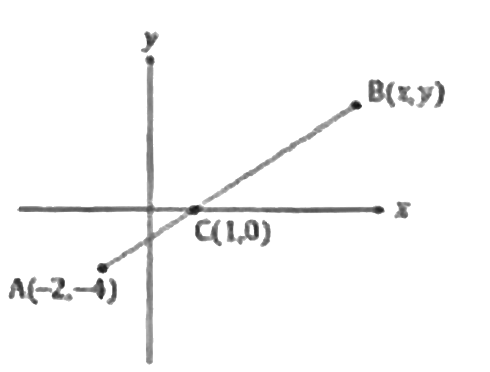

a, b ו־c הם מספרים טבעיים. איזה מהביטויים הבאים אינו שווה לביטוי ab + bc + ca ?
x, y ו־z הם מספרים טבעיים. נתון: xy−1 + 3y = z·(z+1)
איזו מהטענות הבאות תיתכן?
ערוץ טלוויזיה מקרין באופן קבוע לאחר כל 18 דקות של תוכנית כלשהי פרסומות למשך 2 דקות. מה הסיכוי שבעת הדלקת הטלוויזיה בשעה אקראית נראה באותו הרגע פרסומת?

בסרטוט שלפניכם ABCD מלבן. הישר EF יוצר יחד עם הישרים BE ו־DF שני משולשים ישרי זווית BEC ו־CFD.
נתון: ⅓AD = AB , CF = ½CD
על פי נתונים אלו והנתונים שבסרטוט, סכום שטחי המשולשיםשטח המלבן = ?
30 ילדים נחלקים לקבוצות בנות 3 שחקנים, וכל אחת מהקבוצות משחקת משחק אחד מול כל אחת מהקבוצות האחרות. כל משחק מסתיים בניצחון לאחד הצדדים או בתיקו. קבוצה שמנצחת זוכה ב־3 נקודות, קבוצה שמסיימת בתיקו זוכה ב־2 נקודות, והקבוצה שמפסידה לא זוכה באף נקודה.
מהו סכום הנקודות המינימלי שקיבלו כל הקבוצות יחד?
בסרטוט שלפניכם מערכת צירים בה מועבר הקטע AB.
נתון: BC = 2AC
על פי נתונים אלו ונתוני הסרטוט, מה שיעורי הנקודה B?

נתון: x הוא מספר שלם. −1 < yx < 0
איזה מהמצבים הבאים יתכן?
!20 אינו מתחלק ב־
יובל רכש 60 חבילות של קיסמי שיניים. לאחר שפתח את החבילות גילה כי ב־20% מהקופסאות יש 70 קיסמים וב־80% מהקופסאות יש 30 קיסמים.
מהו מספר הקיסמים הממוצע בקופסת קיסמים?
נתון: x = √181 + √181
איזה מהאי־שוויונות הבאים נכון?